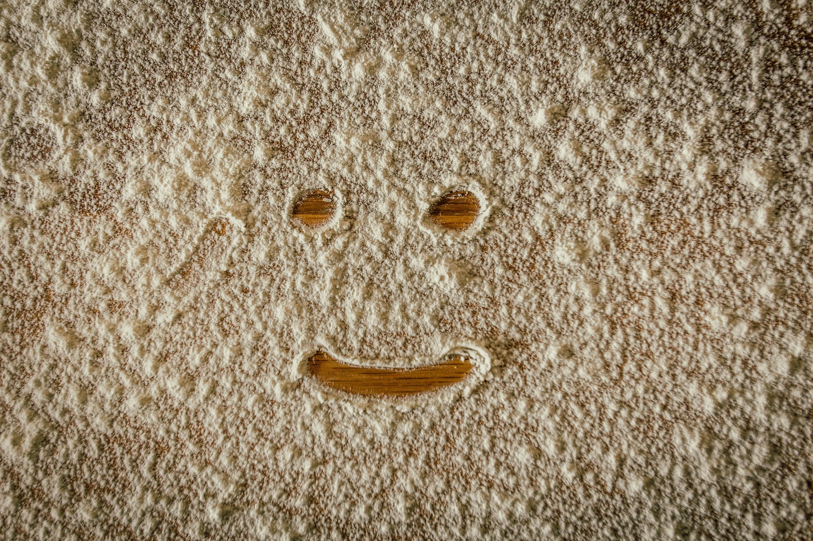

« La farine saine qui nourrit autrement ».

La farine de maïs est une poudre obtenue en broyant les grains de maïs. Elle est utilisée dans la préparation de nombreux produits alimentaires, tels que les tortillas, les tamales et les pains de maïs.
8.000 Ar/kg Certifié consommableLa farine de banane est une poudre obtenue en broyant des bananes séchées. Elle est utilisée dans la préparation de nombreux produits alimentaires, tels que les gâteaux, les biscuits, les smoothies et les crêpes.
18.000 Ar/kg Certifié consommable
La farine de patate douce à chair orange est une poudre obtenue en broyant les tubercules séchés. Elle est utilisée dans la préparation de nombreux produits alimentaires, tels que les pains, les biscuits, les gâteaux et les purées
18.000Ar/Kg Certifié consommable
La farine de riz complet est une poudre obtenue en broyant les grains entiers de riz. Elle est utilisée dans la préparation de nombreux produits alimentaires, tels que les nouilles, les pains, les gâteaux et les galettes
10.000 Ar/Kg Certifié consommableLa farine de sorgho est une poudre obtenue en broyant les grains entiers de sorgho. Elle est utilisée dans la préparation de nombreux produits alimentaires, tels que les galettes, les bouillies, les pains.
14.000 Ar/Kg Certifié consomableLa farine de manioc est une poudre obtenue en transformant les racines entières de manioc. Elle est utilisée dans la préparation de nombreux produits alimentaires, tels que les beignets, les pains, les biscuits, les gâteaux.
5.000 Ar/Kg Certifié consommable